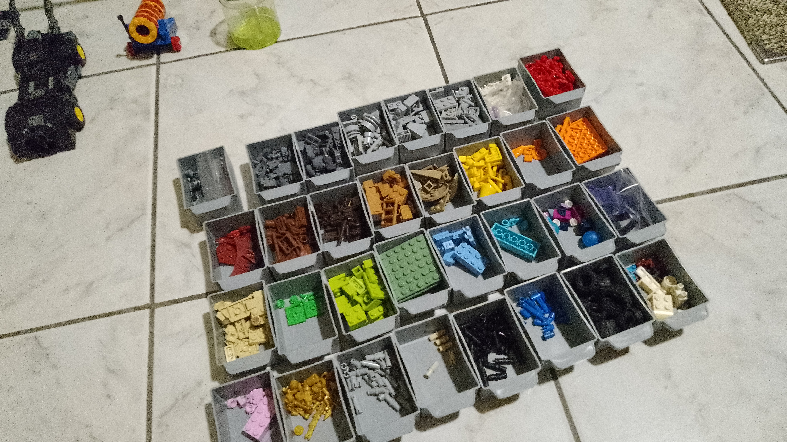
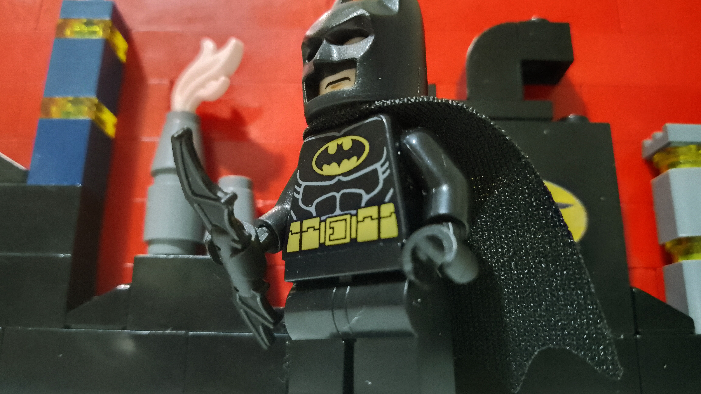
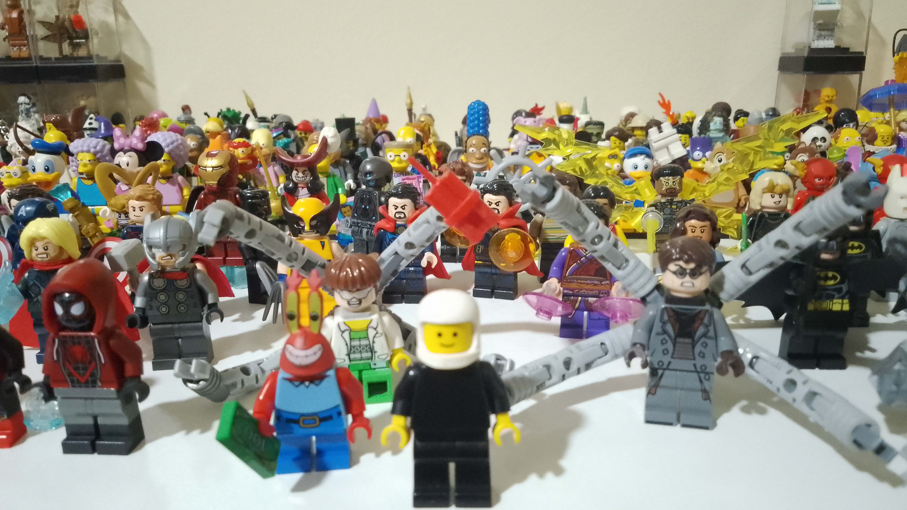
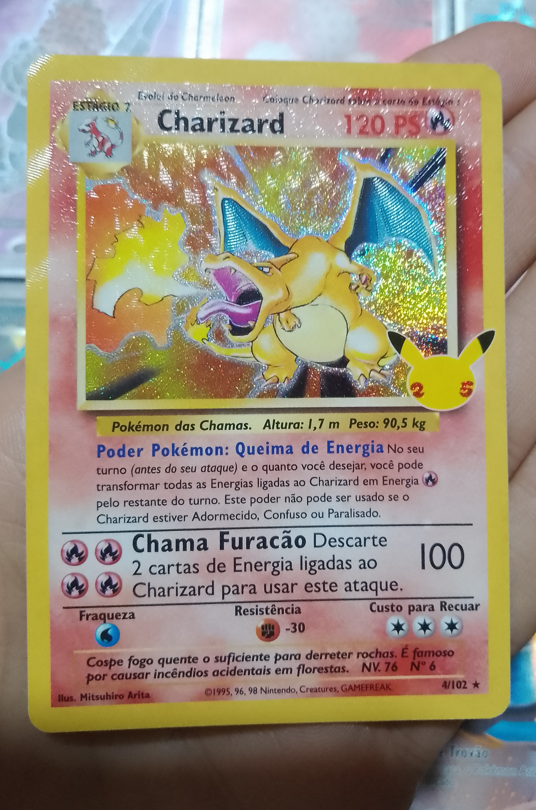
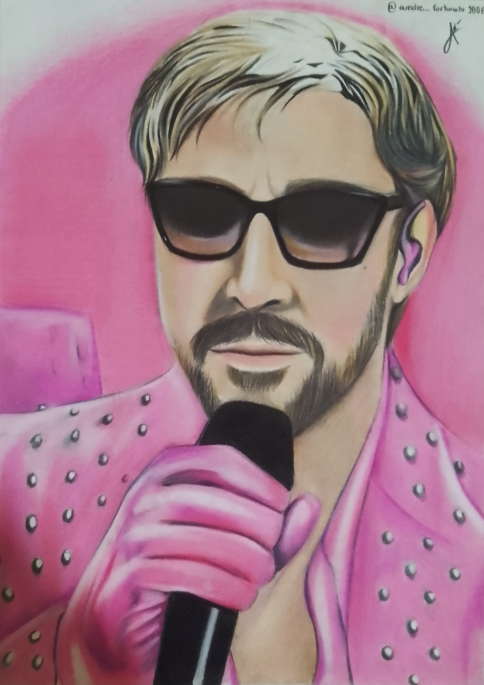
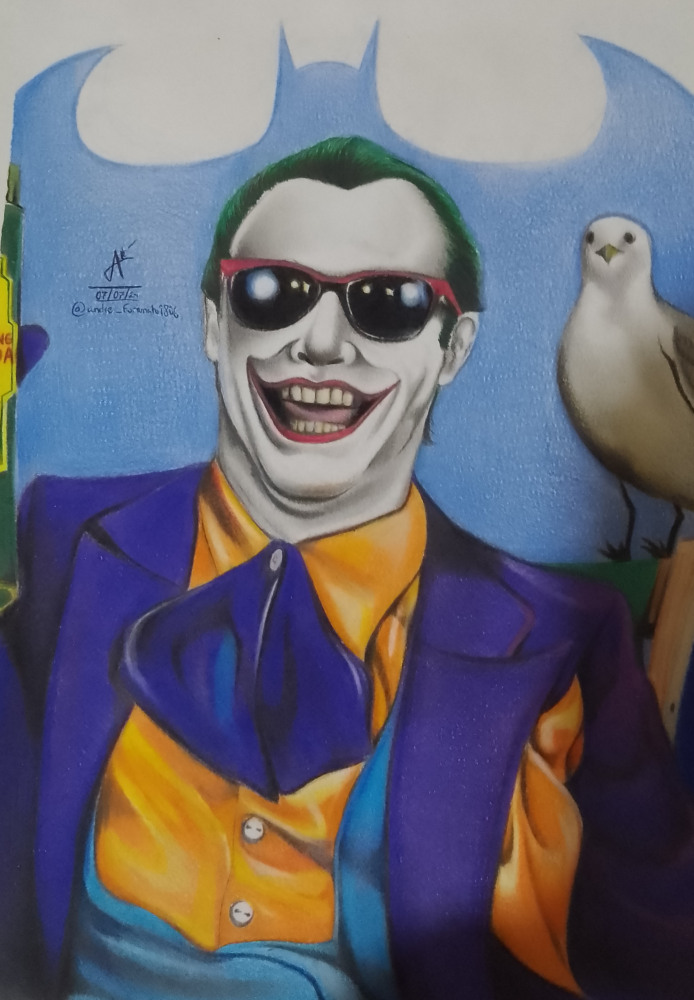
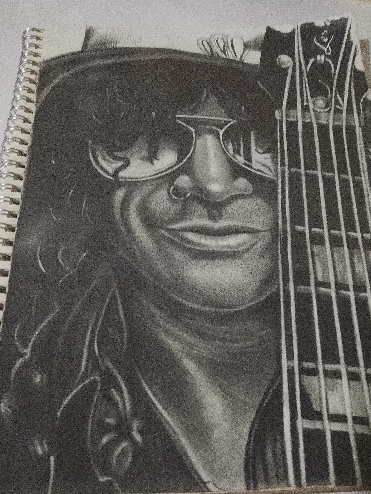

Hobbies do André Fortunato
Os Hobbies de André incluem um intenso vício em LEGO. Sua coleção atualmente conta com cerca de 520 minifiguras e mais de 200 sets! É inacreditável!



As Tendências colecionistas não param por aí. André também tem uma coleçao interessante de cartas de Pokémon, por exemplo. Abaixo, segue uma imagem do cálice sagrado da coleção, Um charizard da edição de coleciondor "celebrações", em comemoração aos 25 anos da franquia.

Bem, nem só de coleções vive o André. Como mencionado na página inicial, ele é apaixonado por artes visuais e plásticas. isso fez com que desde muito cedo ele treinasse muito a arte do desenho realista. Então, aqui vão alguns de seus melhores trabalhos, os quais ele também vende pela sua pequena empresa, a Fortunato Desenhos!



Além disso tudo, Ele também é apaixonado por música. Eric Clapton e Frank Zappa são seus artistas favoritos, bem como bandas como Jethro Tull, Pink Floyd, Fleetwood Mac, Metallica, Heart, Blondie, Derek and the Dominos, Supertramp, Procol Harum, Genesis, Yes, Rush, Dire Straits, ELO e muitas outras estão entre as suas preferidas.
Aqui estão mais lugares para conhecer:
Voltar para a página inicial
Projetos pessoais
Contatos